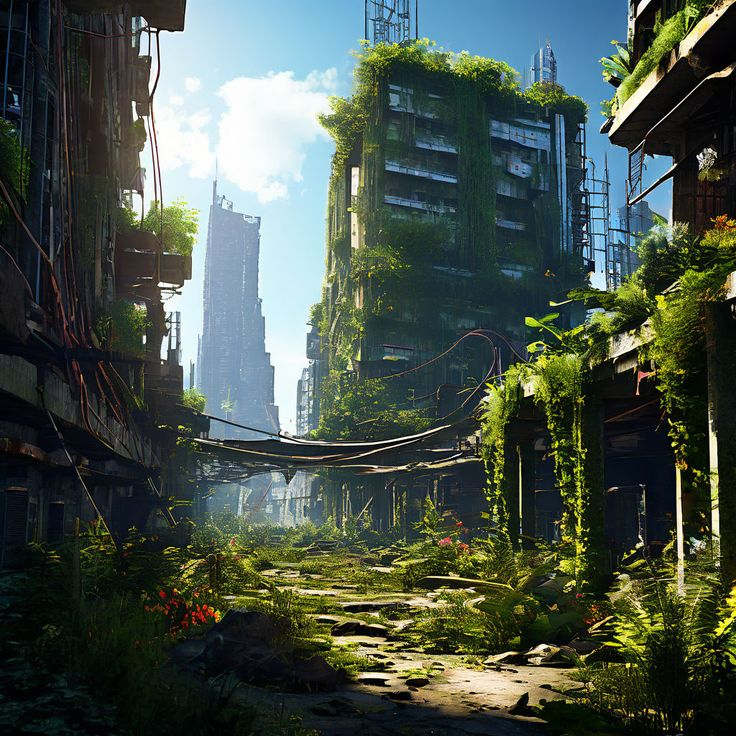

Recovered evidence 01

After docking our ship, we had arrived we saw some signs of civilization it was in ruins. Many years ago this place was full of life, but then the invadors came took everything from them. But all that changed when the people from that world contacted us with an SOS signal. We paked up our best newly develop team recovery and send them to retrieve any of life forms left on the planet. Icy the leader of the team was made with super intelligence but does not know he was made in a lab as a test subject past memories replaces his childhood so he wouldn't have a clue. After every teammember unpacked some went to check out near by the place incase any invadors are close, while the rest of the team stayed to build their base. After a few hours the rest of the team came back